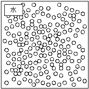

・流体の物性
流体力学には次の様な物性が影響する。
密度r[kg/m3]
単位体積当りの質量。流体の温度や濃度などによって変化する。
水 : 998.2[kg/m3]
空気: 1.189[kg/m3] (20[℃]、1×105[Pa])
液体の方が気体の密度よりも大きいことがわかる。下記はイメージ。

粘度m[Pa・s]
流体の粘り気を表している。流体の温度や濃度によって変化する。
水 : 1,006×10-6[Pa・s]
空気: 18.2×10-6[Pa・s] (20[℃]、1×105[Pa])
液体の方が気体の粘度よりも大きいことがわかる。粘度は、流体粒子間の摩擦係数を表している。大きい程、摩擦による運動量の交換が多くなる。
表面張力g [N/m]
表面張力の大きさを表している。流体の温度や濃度によって変化する。
水: 72.59×10-3[N/m]